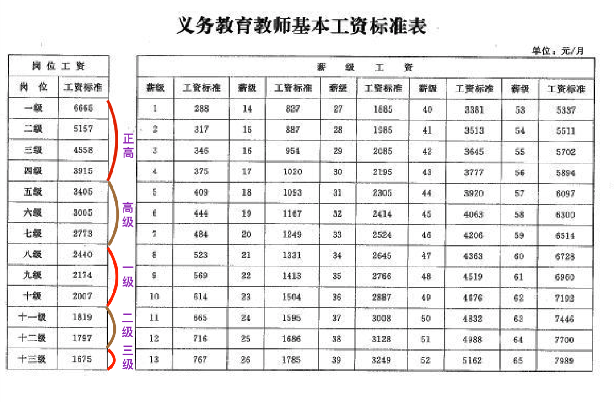
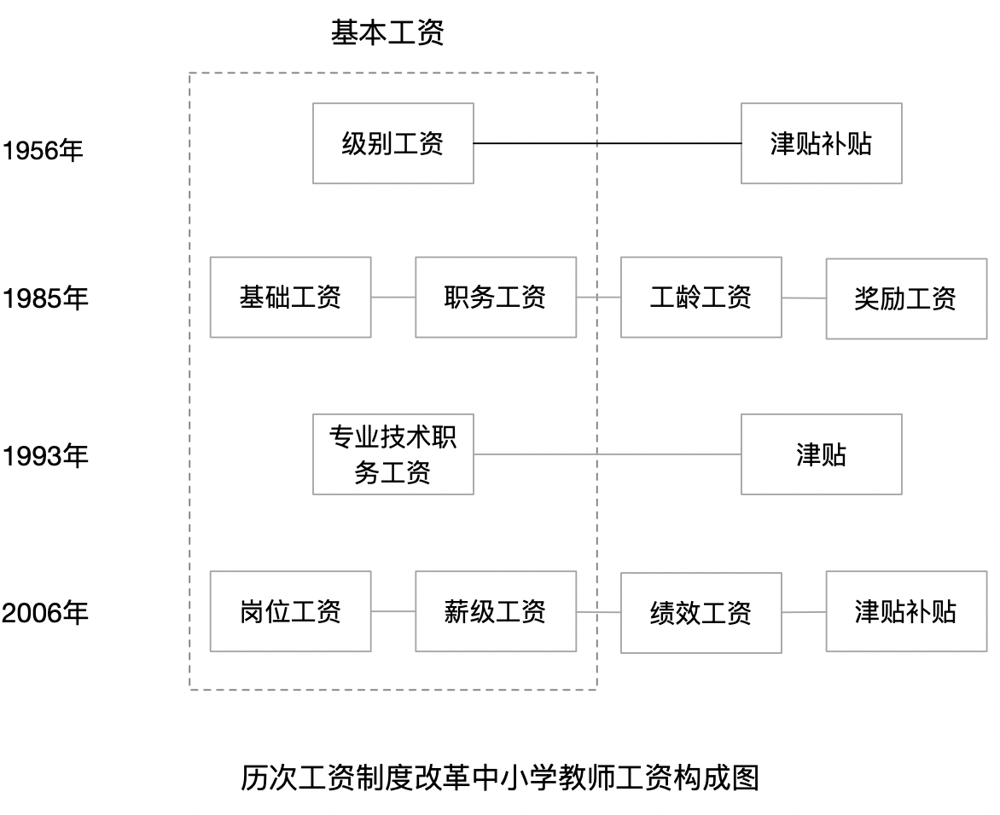
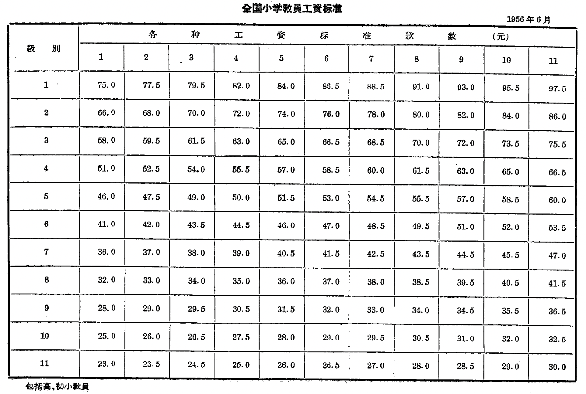
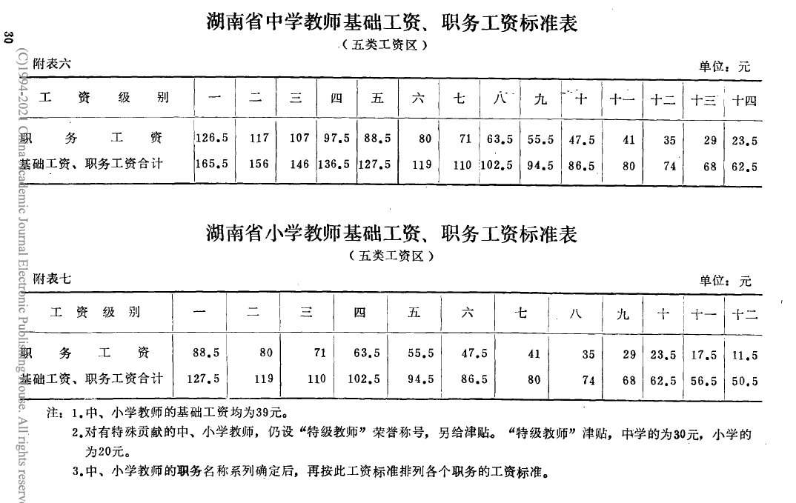
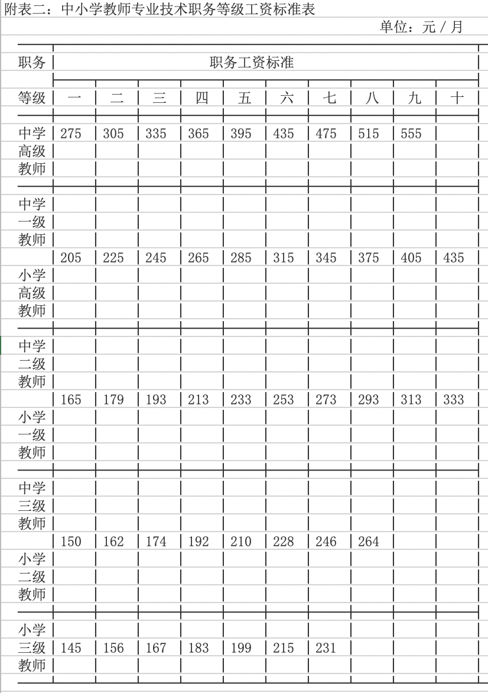

Last updated: 2021-06-06
Checks: 7 0
Knit directory: teacher_status/analysis/
This reproducible R Markdown analysis was created with workflowr (version 1.6.2). The Checks tab describes the reproducibility checks that were applied when the results were created. The Past versions tab lists the development history.
Great! Since the R Markdown file has been committed to the Git repository, you know the exact version of the code that produced these results.
Great job! The global environment was empty. Objects defined in the global environment can affect the analysis in your R Markdown file in unknown ways. For reproduciblity it’s best to always run the code in an empty environment.
The command set.seed(20201029) was run prior to running the code in the R Markdown file. Setting a seed ensures that any results that rely on randomness, e.g. subsampling or permutations, are reproducible.
Great job! Recording the operating system, R version, and package versions is critical for reproducibility.
Nice! There were no cached chunks for this analysis, so you can be confident that you successfully produced the results during this run.
Great job! Using relative paths to the files within your workflowr project makes it easier to run your code on other machines.
Great! You are using Git for version control. Tracking code development and connecting the code version to the results is critical for reproducibility.
The results in this page were generated with repository version 357ce14. See the Past versions tab to see a history of the changes made to the R Markdown and HTML files.
Note that you need to be careful to ensure that all relevant files for the analysis have been committed to Git prior to generating the results (you can use wflow_publish or wflow_git_commit). workflowr only checks the R Markdown file, but you know if there are other scripts or data files that it depends on. Below is the status of the Git repository when the results were generated:
Ignored files:
Ignored: .DS_Store
Ignored: .Rhistory
Ignored: .Rproj.user/
Ignored: analysis/.DS_Store
Unstaged changes:
Modified: README.md
Deleted: analysis/salary10_plot/1956标准.png
Deleted: analysis/salary10_plot/1986年标准.png
Deleted: analysis/salary10_plot/1993标准.png
Deleted: analysis/salary10_plot/2018standard.png
Deleted: analysis/salary10_plot/2018教师标准.png
Deleted: analysis/salary10_plot/工资结构图2.png
Deleted: analysis/salary10_plot/领导指示.jpeg
Modified: ignite.R
Note that any generated files, e.g. HTML, png, CSS, etc., are not included in this status report because it is ok for generated content to have uncommitted changes.
These are the previous versions of the repository in which changes were made to the R Markdown (analysis/salary10.Rmd) and HTML (docs/salary10.html) files. If you’ve configured a remote Git repository (see ?wflow_git_remote), click on the hyperlinks in the table below to view the files as they were in that past version.
| File | Version | Author | Date | Message |
|---|---|---|---|---|
| Rmd | 357ce14 | yangyong ye | 2021-06-06 | Add my 2021, 06, 06 analysis second |
| html | 219102d | yangyong ye | 2021-06-06 | Build site. |
| Rmd | 45b5980 | yangyong ye | 2021-06-06 | Add my 2021, 06, 06 analysis |
| Rmd | 8fa2f85 | yangyong ye | 2021-06-02 | update |
| html | 8fa2f85 | yangyong ye | 2021-06-02 | update |
| Rmd | 4d3f0e4 | yangyong ye | 2021-06-02 | update graph |
| html | 4d3f0e4 | yangyong ye | 2021-06-02 | update graph |
| html | de265db | yangyong ye | 2021-06-01 | Build site. |
| html | 5f1de5a | yangyong ye | 2021-06-01 | Build site. |
| Rmd | e4ac67f | yangyong ye | 2021-06-01 | Add my 2021, 06, 01 analysis |
中小学教师工资待遇是很多人关注的一个话题，但是很少人知道中小学教师工资水平是怎么决定的，甚至很多中小学教师本人也看不懂自己的工资条。教师工资条的科目比较多，不同科目的标准其实由不同主体决定的。今天我们说说中小学教师的“国标”工资和10%额外工资。简单地说，国标工资就是指教师工资中国家统一设定标准的科目，这包括现行中小学教师工资当中的两个科目:岗位工资和薪级工资，如下图是2018年制定的现行事业单位专业技术人员基本工资标准表，该表适用全国各类事业单位技术人员，包括大学教师，2018之前所有中小学教师也适用该类标准，2018年之后国家针对义务教育教师设定了独立的工资标准（见下图）。岗位工资由职称及其等级决定，薪级工资由职称、职称年限和工龄决定。因此，就基本工资而言，除了工龄这个自动变化因素以外，职称就是唯一的决定因素了。

接下来说说基本工资的由来，我国中小学教师工资结构政策一直作为事业单位工作人员的一部分进行调整的。1949年以来我国分别在1956年、1985年、1993年和2006年调整过工资结构，历次调整后的工资结构如下图，一般都会包括一个基本工资，也就是“囯标”部分，和一些活的部分，由地方政府或学校决定。 
1956年实行的是级别工资。从级别上，中学有10级，小学有11级，比如1956年，小学1级教师月工资为75元，11级为23元。而且，当时国家根据经济水平和物价水平等因素将全国分为11个工资区，以第1工资区为基数，每升1个工资区标准增加3%。

1985年开始实行的是以职务工资为主要内容的结构工资制，其基本工资部分包括基础工资和职务工资，基础工资是以大体维持工作人员本人的基本生活费计算，当时六类工资区定为四十元，从领导干部到一般工作人员，均执行相同的基础工资。职务工资按照工作人员的职务高低、责任大小、工作繁简和业务技术水平确定，每一职务设几个等级的工资标准，中学设定14个等级，小学设定了12个等级，1986年中小学设立职称之后，职务等级与职称等级匹配。 
1993年的实行的是职务等级工资制，职务工资由教师的职称和相应的等级决定。需要说明的是，我国教师工资结构只经历了四次大的调整，但工资标准国家会根据情况不断调整，比如说1993年标准在1997、1999、2001和2003年都进行调整过。 
上面基本上就是我国1949年以来中小学教师工资中“国标”部分的沿革过程，中小学教师工资标准还有一个10%的额外标准，这个是怎么由来的呢？1985年工资制度改革之前，当有关部门将工资改革方案报有关领导请示的时候，得到指示：“对中小学教师，不仅要有工龄工资，而且要使他们的工资标准，比同等学历从事其他行业的人略高一点才好”。1985年《中共中央、国务院关于国家机关和事业单位工作人员工资制度改革问题的通知》提到“中、小学教师和职级不符的中年骨干的工资要适当多增加一些”。1987年《国务院关于提高中小学教师工资待遇的通知》中明确“从一九八七年十月起，将中小学教师和幼儿园教师现行的工资标准提高10％”。在1993年和2006年的工资改革中一直保持这一政策，即中小学教师工资比其他事业单位工作人员在基本工资部分的标准高10%。2018对国家对10%的政策作了一些调整，即义务教育阶段教师不再执行10%的标准，而执行不同于其它事业单位工作人员的标准，这个独立的标准比如其它事业单位工作人员的标准高出10%还多一点，除义务教育教师以外的其他中小学教师的基本工资标准，仍按高于事业单位技术人员基本工资标准的10%确定。
从中小学教师工资的结构与标准的变革过程可知，中小学教师工资调整的一大特点就是整体推进。中小学教师工资调整是跟所有事业单位工作人员的工资结构与标准是挂钩在一起的，使用相同的结构，标准也趋于一致；而事业单位工作人员工资结构调整又与公务员的工资结构调整并行发生，上面提到的4次工资制度改革，国家机关和事业单位工作人员的工资制度是同步改革的，只是使用不同的结构与标准，这一特点给调整中小学教师工资带来很大的困难，第一，要等所有其他类别的工作人员的工资改革条件都成熟了，这个调整才能启动，第二，涉及所有由财政负担的工作人员，体量巨大，成本巨大，调整难度大。最后需要说明的是，这篇文章主要说的是中小学教师工资中的国标部分，教师工资中还有很多活的部分，比如绩效工资，还有一些专项的工资科目，比如教龄工资、乡村教师生活补助等，后期再说。
─ Session info ───────────────────────────────────────────────────────────────
setting value
version R version 3.6.3 Patched (2020-04-28 r79449)
os macOS 10.16
system x86_64, darwin15.6.0
ui X11
language (EN)
collate en_US.UTF-8
ctype en_US.UTF-8
tz Asia/Shanghai
date 2021-06-06
─ Packages ───────────────────────────────────────────────────────────────────
package * version date lib source
bslib 0.2.5.1 2021-05-18 [1] CRAN (R 3.6.2)
cachem 1.0.5 2021-05-15 [1] CRAN (R 3.6.2)
callr 3.7.0 2021-04-20 [1] CRAN (R 3.6.2)
cli 2.5.0 2021-04-26 [1] CRAN (R 3.6.2)
crayon 1.4.1 2021-02-08 [1] CRAN (R 3.6.2)
desc 1.3.0 2021-03-05 [1] CRAN (R 3.6.2)
devtools 2.4.1 2021-05-05 [1] CRAN (R 3.6.2)
digest 0.6.27 2020-10-24 [1] CRAN (R 3.6.2)
ellipsis 0.3.2 2021-04-29 [1] CRAN (R 3.6.2)
evaluate 0.14 2019-05-28 [1] CRAN (R 3.6.0)
fansi 0.5.0 2021-05-25 [1] CRAN (R 3.6.2)
fastmap 1.1.0 2021-01-25 [1] CRAN (R 3.6.2)
fs 1.5.0 2020-07-31 [1] CRAN (R 3.6.2)
git2r 0.28.0 2021-01-10 [1] CRAN (R 3.6.2)
glue 1.4.2 2020-08-27 [1] CRAN (R 3.6.2)
highr 0.9 2021-04-16 [1] CRAN (R 3.6.2)
htmltools 0.5.1.1 2021-01-22 [1] CRAN (R 3.6.2)
httpuv 1.6.1 2021-05-07 [1] CRAN (R 3.6.2)
jquerylib 0.1.4 2021-04-26 [1] CRAN (R 3.6.2)
jsonlite 1.7.2 2020-12-09 [1] CRAN (R 3.6.2)
knitr * 1.33 2021-04-24 [1] CRAN (R 3.6.2)
later 1.2.0 2021-04-23 [1] CRAN (R 3.6.2)
lifecycle 1.0.0 2021-02-15 [1] CRAN (R 3.6.2)
magrittr 2.0.1 2020-11-17 [1] CRAN (R 3.6.2)
memoise 2.0.0 2021-01-26 [1] CRAN (R 3.6.2)
pillar 1.6.1 2021-05-16 [1] CRAN (R 3.6.2)
pkgbuild 1.2.0 2020-12-15 [1] CRAN (R 3.6.2)
pkgconfig 2.0.3 2019-09-22 [1] CRAN (R 3.6.0)
pkgload 1.2.1 2021-04-06 [1] CRAN (R 3.6.2)
prettyunits 1.1.1 2020-01-24 [1] CRAN (R 3.6.0)
processx 3.5.2 2021-04-30 [1] CRAN (R 3.6.2)
promises 1.2.0.1 2021-02-11 [1] CRAN (R 3.6.2)
ps 1.6.0 2021-02-28 [1] CRAN (R 3.6.2)
purrr 0.3.4 2020-04-17 [1] CRAN (R 3.6.2)
R6 2.5.0 2020-10-28 [1] CRAN (R 3.6.2)
Rcpp 1.0.6 2021-01-15 [1] CRAN (R 3.6.2)
remotes 2.4.0 2021-06-02 [1] CRAN (R 3.6.2)
rlang 0.4.11 2021-04-30 [1] CRAN (R 3.6.2)
rmarkdown 2.8 2021-05-07 [1] CRAN (R 3.6.2)
rprojroot 2.0.2 2020-11-15 [1] CRAN (R 3.6.2)
sass 0.4.0 2021-05-12 [1] CRAN (R 3.6.2)
sessioninfo 1.1.1 2018-11-05 [1] CRAN (R 3.6.0)
stringi 1.6.2 2021-05-17 [1] CRAN (R 3.6.2)
stringr 1.4.0 2019-02-10 [1] CRAN (R 3.6.0)
testthat 3.0.2 2021-02-14 [1] CRAN (R 3.6.2)
tibble 3.1.2 2021-05-16 [1] CRAN (R 3.6.2)
usethis 2.0.1 2021-02-10 [1] CRAN (R 3.6.2)
utf8 1.2.1 2021-03-12 [1] CRAN (R 3.6.2)
vctrs 0.3.8 2021-04-29 [1] CRAN (R 3.6.2)
whisker 0.4 2019-08-28 [1] CRAN (R 3.6.0)
withr 2.4.2 2021-04-18 [1] CRAN (R 3.6.2)
workflowr * 1.6.2 2020-04-30 [1] CRAN (R 3.6.2)
xfun 0.23 2021-05-15 [1] CRAN (R 3.6.2)
yaml 2.2.1 2020-02-01 [1] CRAN (R 3.6.0)
[1] /Library/Frameworks/R.framework/Versions/3.6/Resources/library